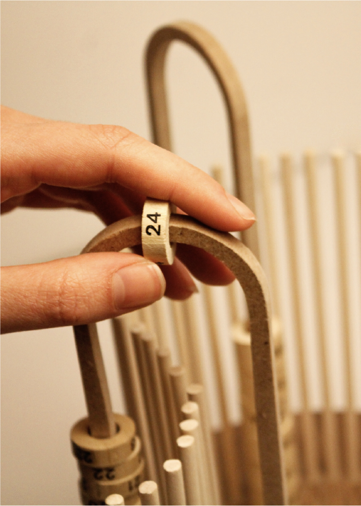
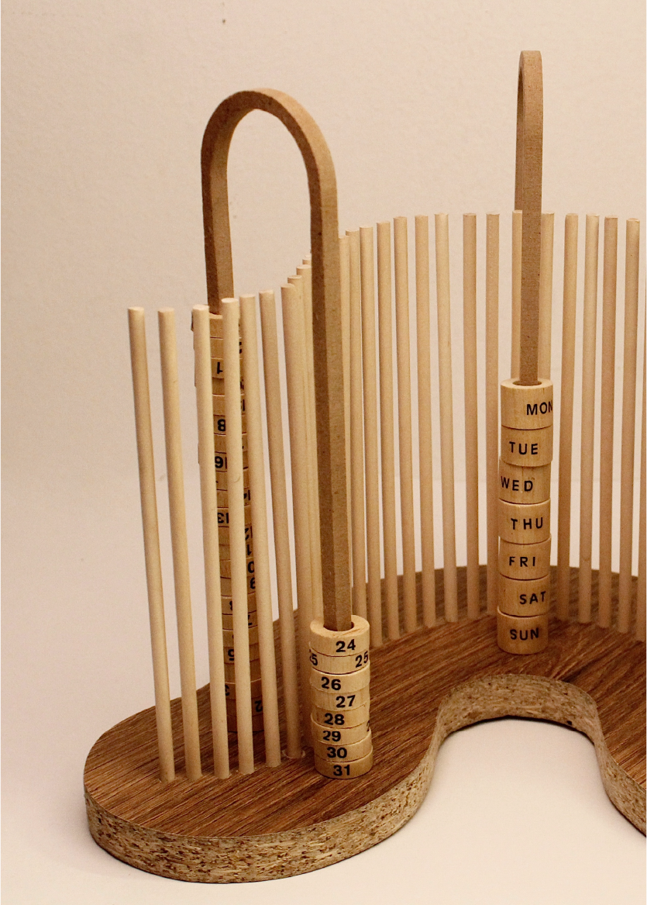
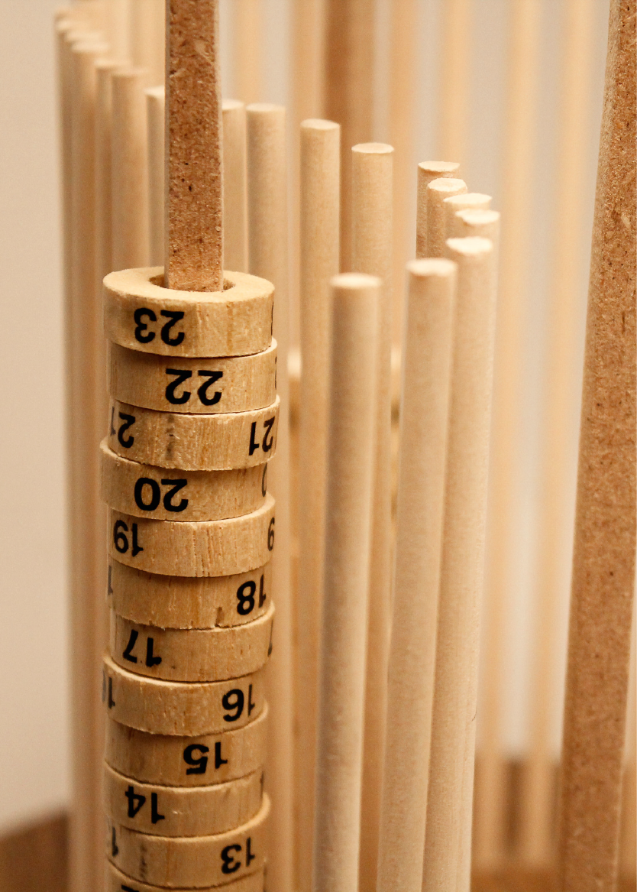
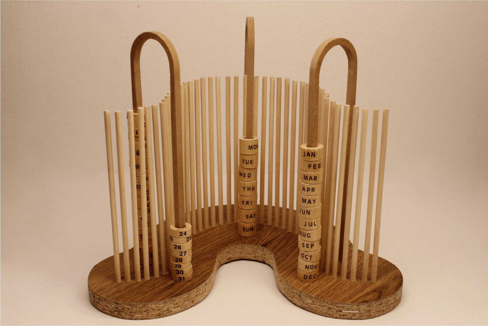

POLITECNICO DI TORINO // KEYWORDS DESIGN
UNREPEATABLE
Obiettivo del progetto è stato creare un calendario perpetuo che fosse duraturo negli anni, e quindi sempre riutilizzabile. Il concept ha come punto di partenza la natura fugace dei giorni e il nostro calendario gregoriano, realizzato interamente in legno, diventa simbolo del tentativo umano di resistervi. La memoria, rappresentata dalla parete a listelli, assume il valore di filtro: i giorni passano ma non vengono cancellati, restano vivi nei nostri ricordi.



